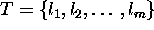
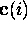
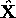
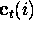
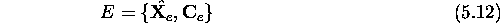
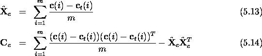

We are seeking in this section a method for combining individual
estimates obtained from different tracked landmarks. This can be
accomplished using the merging operation defined above if we can
obtain an error model for estimates obtained from each tracked
landmark. An error model for a particular tracked landmark T can be
constructed using cross-validation. That is, we measure how
well each observed candidate landmark in T is predicted by the rest
of the candidate landmarks in T. This is a quantity which is fixed
for a given tracked landmark, and hence can be computed a
priori. More formally, for each landmark candidate which is a
member of a tracked landmark , we remove
from T to obtain T' and use T' to estimate the camera
position  of , using the position estimation
method described in Section 1 of this chapter. The error model
E for T is then described as an AT with two components,
 being the the average displacement of
from the true position  for all of T, and
being the total covariance of the same displacements,

where

where m is the number of candidate landmarks in the tracked landmark.
Note that while the merging operation defined previously for combining noisy estimates assumed zero mean error, it is possible for to be non-zero; a tracked landmark may, for whatever reason, contain systematic error. In order to maintain our assumption that the mean error is zero, we subtract this estimated systematic error from the position estimates prior to merging.